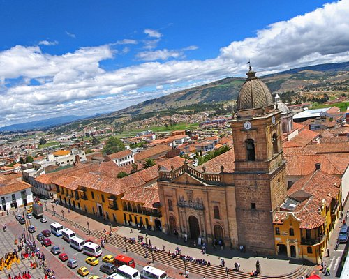
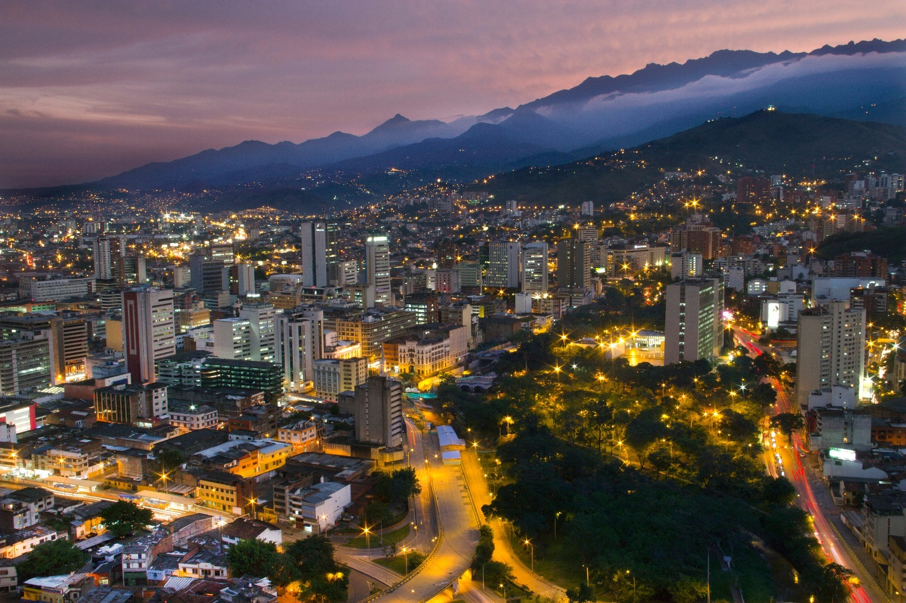
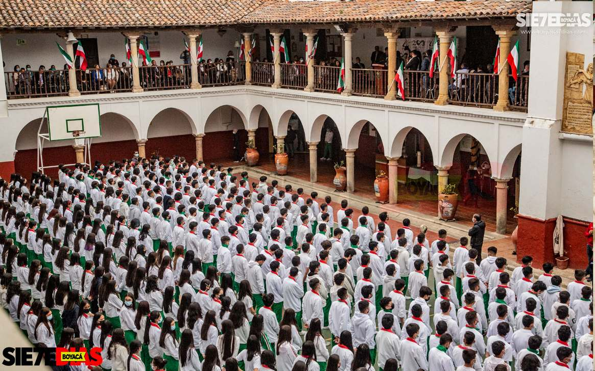
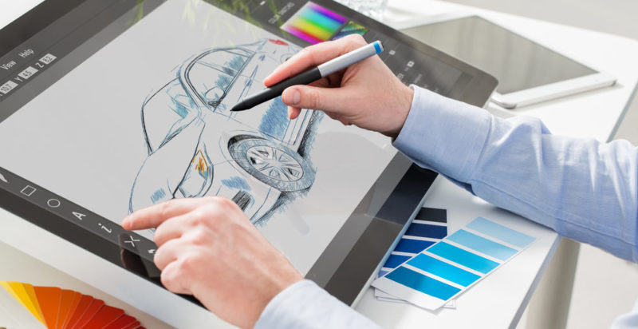

|  | Nací en la ciudad de Tunja, en el año 2002 y viví en tunja hasta el año 2015, vivo con mis padres y mi hermano y desde que nací mis padres han tenido una empresa de especias para cocina. |
| En el año 2015, mis padres deciden trasladar su empresa a la ciudad de Cali por lo que nos mudamos, estudié en el Colegio Americano y cursé en ese colegio los grados octavo y noveno. |
 |
|  | En el año 2017 mis padres consideraban que su deber de posicionar su marca en el sur del pais estaba completa, por lo que decidimos regresar a tunja y comienzo a cursar decimo grado en el colegio de Boyacá. |
| En el año 2019 es mi graduación, decido tomar un año sabatico para trabajar en la empresa de mis padres y asi poder comprar mi computador, ademas de tener la oportunidad de pensar que profesión escogería. |
|
|  | En el año 2021 decido ingresar al programa de diseño de interacción en la universidad santo tomás con el objetivo de estudiar una profesión innovadora y que puedo aplicar a mi gran pasión que son los automoviles. |